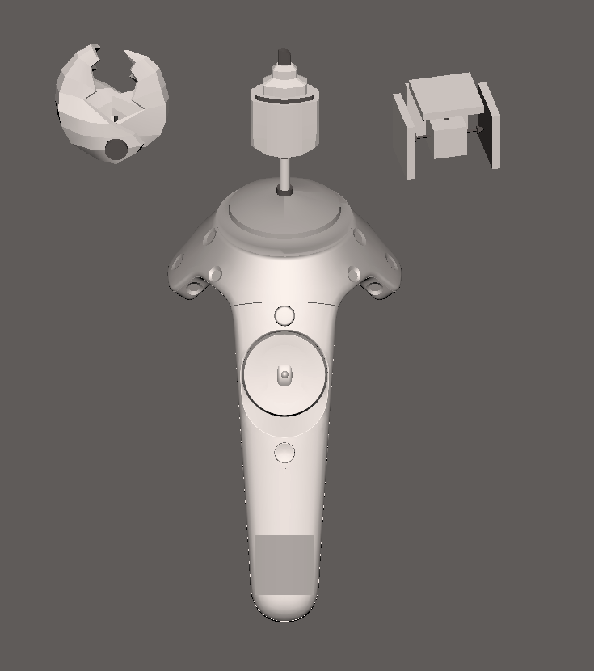
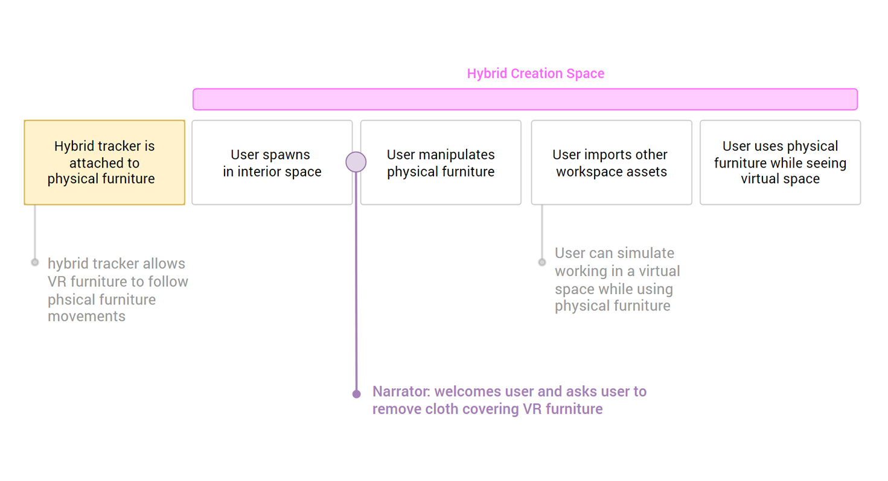
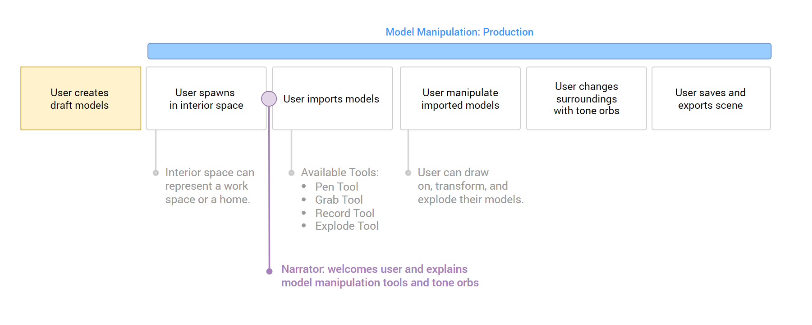
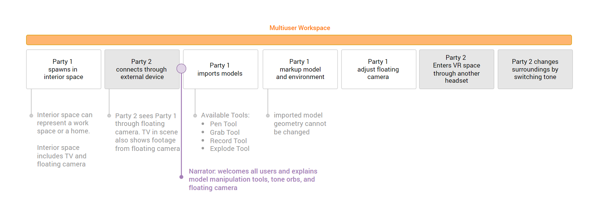

Steelcase creates innovative furniture for businesses and homes. All of their creation process involves teams of designers, engineers, product managers, and more. Steelcase asked us to imagine a VR workspace for the future, where collaborators can set up remote workspaces that support real-time design discussions and production.
The question posed by Steelcase was very big — "What is the future of workspace collaboration? ". I began my research by following the "double-diamond design model". First we needed to discover the root problems by taking a step back and examining all of the steps in our client's collaboration process. Is there anything fundamental causing an issue? Is there something XR can bring that could solve those issues and enhance the process?
Finding the Right Problem
The initial phase of research involved understanding the steps that go into workspace collaboration — establish a prompt, explore designs, conduct in-person or remote feedback, develop the product, and test the product. I started by expanding outwards and creating sketches of situations where people collaborate, such as in classrooms, restaurants, and group activities.
XR workspace concept research sketches; what can people use VR or AR for?
Discover
1. How do people collaborate in a workspace?
2. What is unique to creating physical furniture?
3. When can XR best enhance workspace collaboration?
Define
What do collaborators struggle with in current workspaces?
1. Traditional digital workspaces don't support immersive spatial design
2. Remote feedback lacks physicality for both parties
3. Testing is limited to physical spaces
Experience Flow
Find the Right Solution
After converging on several specific problems, I expanded out again to explore the posibilities of solutions. Since most people are new to working in VR, I utilized skeuomorphic designs to ease the transition into VR interactions.
I created models for VR tool attachments that mimicked traditional creative tools — grab, draw, speak, explode. These would become the essential creative tools for our VR workspaces.
Referencing our focus questions, we developed three solution directions.

VR tool attachments secured onto front of controller
Problem :
Traditional digital workspaces don't support immersive spatial design
Solution :
Give users a 360° open VR canvas with creative tools
Inside an immersive VR space, users are not limited to the 2D screen of a traditional design tool. Users can create furnitures and easily get a feeling of physicality and size compared to themselves.
Problem :
Remote feedback lacks physicality for both parties
Solution :
Reduce the gap between traditional and XR platforms with hybrid workspaces
A hybrid workspace combines VR/AR platforms with traditional devices — monitors, laptop, desks, or chairs. Users on monitors can view VR workspaces from a floating VR camera or easily join into exisiting VR workspaces. I also explored the idea of combining physical chairs with virtual workspaces.
Physical chair combined with virtual workspace
tones - VR swappable 360 backgrounds
Problem :
Testing is limited to physical spaces
Solution :
Give greater flexibility to environment with swappable digital surroundings
We created worlds out of 360˚ images that users can easily swap around in a VR workspace. This gives a quick way to recontextualize the surroundings and use case for a piece of furniture.
Deliver
After viewing these initial solutions, Steelcase encouraged us to create spaces that covered each direction. We decided to make 4 separate workspaces, and I created experience flows for each of them.
Playground; optimized for freeform concept exploration and ideation

Hybrid Creation Space; bridges the gap between physical and virtual workspaces

Model Maniupulation; allows for immersive spacial design and iteration in unlimited environments

Mulituser Workspace; creates easier transitions between remote platforms for feedback and cooperation
Future Explorations
Results and Feedback
demo day; Steelcase leads came to try our future workspace demo
Result Highlights:
1. XR workspace more easily transition between personal and shared creative spaces
2. Client was wowed by hybrid creation space demo.
3. Opened up further discussions about the possibilities of prototyping in an XR workspace
Steelcase really enjoyed the demos, which started further conversations about how XR design fictions allow the user to physcially step into a test case scenario, previously only imaginable.
What was the feasibility and cost of updating current working pipelines to an XR workspace? Answering that would require further testing.
Future Explorations of XR
My last contribution to this project was exploring a future in which we could have XR headsets on the go. How will these devices change the way we work and define private versus public spaces?